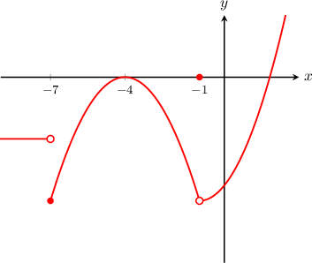

<div id="question-78133" class="question"><div class="questionHeader"><span class="questionNumber">48.</span><a class="questionKP" href="/topics/462#3567">Determining Whether a Function Is Continuous at a Given Point</a><span class="helpButton" questionid="78133">?</span></div><div class="questionGraphicFrame"></div><div class="questionText"><p>The curve <mjx-container class="MathJax CtxtMenu_Attached_0" jax="CHTML" tabindex="0" ctxtmenu_counter="469" style="font-size: 119.4%; position: relative;"><mjx-math class="MJX-TEX" aria-hidden="true"><mjx-mi class="mjx-i"><mjx-c class="mjx-c1D466 TEX-I"></mjx-c></mjx-mi><mjx-mo class="mjx-n" space="4"><mjx-c class="mjx-c3D"></mjx-c></mjx-mo><mjx-mi class="mjx-i" space="4"><mjx-c class="mjx-c1D453 TEX-I"></mjx-c></mjx-mi><mjx-mo class="mjx-n"><mjx-c class="mjx-c28"></mjx-c></mjx-mo><mjx-mi class="mjx-i"><mjx-c class="mjx-c1D465 TEX-I"></mjx-c></mjx-mi><mjx-mo class="mjx-n"><mjx-c class="mjx-c29"></mjx-c></mjx-mo></mjx-math><mjx-assistive-mml unselectable="on" display="inline"><math xmlns="http://www.w3.org/1998/Math/MathML"><mi>y</mi><mo>=</mo><mi>f</mi><mo stretchy="false">(</mo><mi>x</mi><mo stretchy="false">)</mo></math></mjx-assistive-mml></mjx-container> is shown above. At which of the following points is <mjx-container class="MathJax CtxtMenu_Attached_0" jax="CHTML" tabindex="0" ctxtmenu_counter="470" style="font-size: 119.4%; position: relative;"><mjx-math class="MJX-TEX" aria-hidden="true"><mjx-mi class="mjx-i"><mjx-c class="mjx-c1D453 TEX-I"></mjx-c></mjx-mi><mjx-mo class="mjx-n"><mjx-c class="mjx-c28"></mjx-c></mjx-mo><mjx-mi class="mjx-i"><mjx-c class="mjx-c1D465 TEX-I"></mjx-c></mjx-mi><mjx-mo class="mjx-n"><mjx-c class="mjx-c29"></mjx-c></mjx-mo></mjx-math><mjx-assistive-mml unselectable="on" display="inline"><math xmlns="http://www.w3.org/1998/Math/MathML"><mi>f</mi><mo stretchy="false">(</mo><mi>x</mi><mo stretchy="false">)</mo></math></mjx-assistive-mml></mjx-container> continuous?</p>
<ol class="questionStatements"><li>  <mjx-container class="MathJax CtxtMenu_Attached_0" jax="CHTML" tabindex="0" ctxtmenu_counter="471" style="font-size: 119.6%; position: relative;"><mjx-math class="MJX-TEX" aria-hidden="true"><mjx-mi class="mjx-i"><mjx-c class="mjx-c1D465 TEX-I"></mjx-c></mjx-mi><mjx-mo class="mjx-n" space="4"><mjx-c class="mjx-c3D"></mjx-c></mjx-mo><mjx-mo class="mjx-n" space="4"><mjx-c class="mjx-c2212"></mjx-c></mjx-mo><mjx-mn class="mjx-n"><mjx-c class="mjx-c37"></mjx-c></mjx-mn></mjx-math><mjx-assistive-mml unselectable="on" display="inline"><math xmlns="http://www.w3.org/1998/Math/MathML"><mi>x</mi><mo>=</mo><mo>−</mo><mn>7</mn></math></mjx-assistive-mml></mjx-container> </li><li>  <mjx-container class="MathJax CtxtMenu_Attached_0" jax="CHTML" tabindex="0" ctxtmenu_counter="472" style="font-size: 119.6%; position: relative;"><mjx-math class="MJX-TEX" aria-hidden="true"><mjx-mi class="mjx-i"><mjx-c class="mjx-c1D465 TEX-I"></mjx-c></mjx-mi><mjx-mo class="mjx-n" space="4"><mjx-c class="mjx-c3D"></mjx-c></mjx-mo><mjx-mo class="mjx-n" space="4"><mjx-c class="mjx-c2212"></mjx-c></mjx-mo><mjx-mn class="mjx-n"><mjx-c class="mjx-c34"></mjx-c></mjx-mn></mjx-math><mjx-assistive-mml unselectable="on" display="inline"><math xmlns="http://www.w3.org/1998/Math/MathML"><mi>x</mi><mo>=</mo><mo>−</mo><mn>4</mn></math></mjx-assistive-mml></mjx-container> </li><li>  <mjx-container class="MathJax CtxtMenu_Attached_0" jax="CHTML" tabindex="0" ctxtmenu_counter="473" style="font-size: 119.6%; position: relative;"><mjx-math class="MJX-TEX" aria-hidden="true"><mjx-mi class="mjx-i"><mjx-c class="mjx-c1D465 TEX-I"></mjx-c></mjx-mi><mjx-mo class="mjx-n" space="4"><mjx-c class="mjx-c3D"></mjx-c></mjx-mo><mjx-mo class="mjx-n" space="4"><mjx-c class="mjx-c2212"></mjx-c></mjx-mo><mjx-mn class="mjx-n"><mjx-c class="mjx-c31"></mjx-c></mjx-mn></mjx-math><mjx-assistive-mml unselectable="on" display="inline"><math xmlns="http://www.w3.org/1998/Math/MathML"><mi>x</mi><mo>=</mo><mo>−</mo><mn>1</mn></math></mjx-assistive-mml></mjx-container> </li></ol></div><div class="answerDetails"><div class="questionDifficulty difficultyModerate">M</div><span class="answerCreated">Thu, Feb 27th @ 11:06 AM</span><span class="answerDetailsSeparator">|</span><span class="timeElpased">Elapsed: 0:40</span><span class="answerResult"><span style="color: green;">Correct</span></span></div></div>